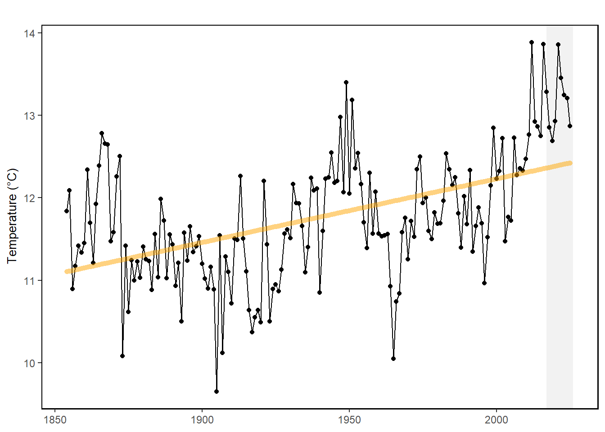

49 NE Shelf Annual Sea Surface Temperature (SST)
Last updated July 23, 2026
Description: Average annual sea-surface temperatures from the NOAA extended reconstructed sea surface temperature data set (ERSST V5) on the Northeast Continental Shelf.
Contributor(s): Kevin Friedland, Brandon Beltz
Affiliations: NEFSC
Indicator Family:
Indicator Category:
Synthesis Theme:
49.1 Introduction to Indicator
The data presented here are average annual sea-surface temperatures from the NOAA extended reconstructed sea surface temperature data set (ERSST V5) on the Northeast Continental Shelf.
49.2 Key Results and Visualizations
Since the 1860’s, the Northeast US shelf sea surface temperature (SST) has exhibited an overall warming trend, with the past decade measuring well above the long term average.
Mid-Atlantic

49.3 Implications
Long term SST demonstrates that the annual average sea surface temperatures observed during the most recent ten years are well above the historical average dating back to the 1860s.
49.5 Get the data
Point of contact: Brandon.Beltz@noaa.gov
ecodata dataset: ecodata::long_term_sst
Tech Doc link: https://noaa-edab.github.io/tech-doc/long_term_sst.html